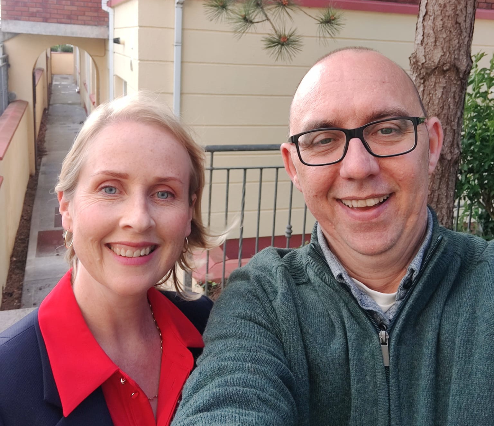
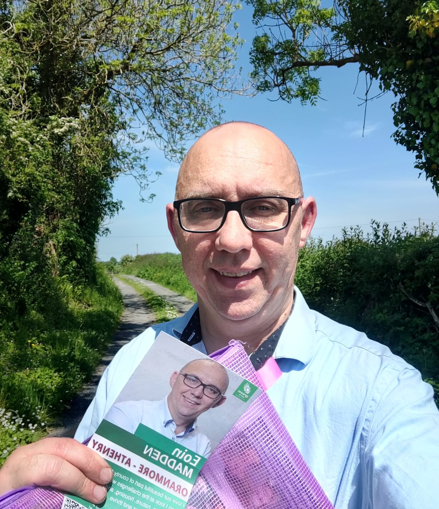
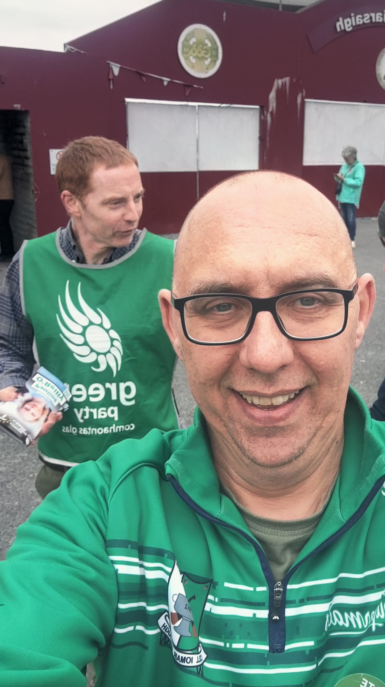
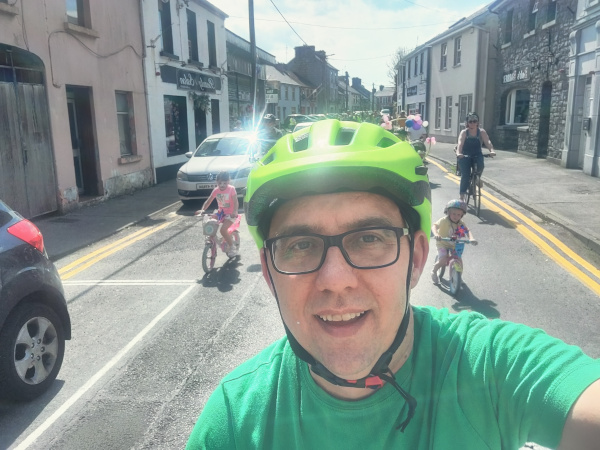
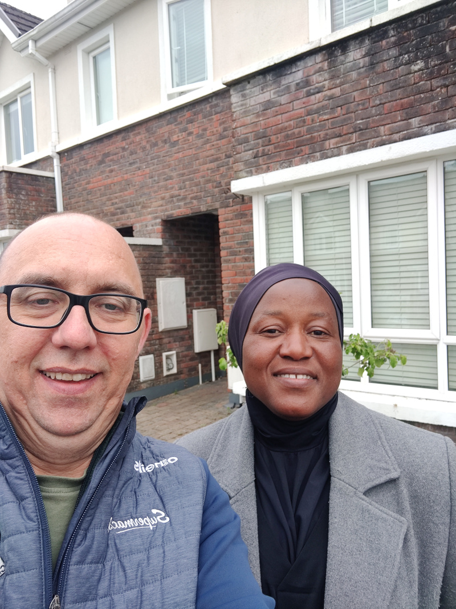
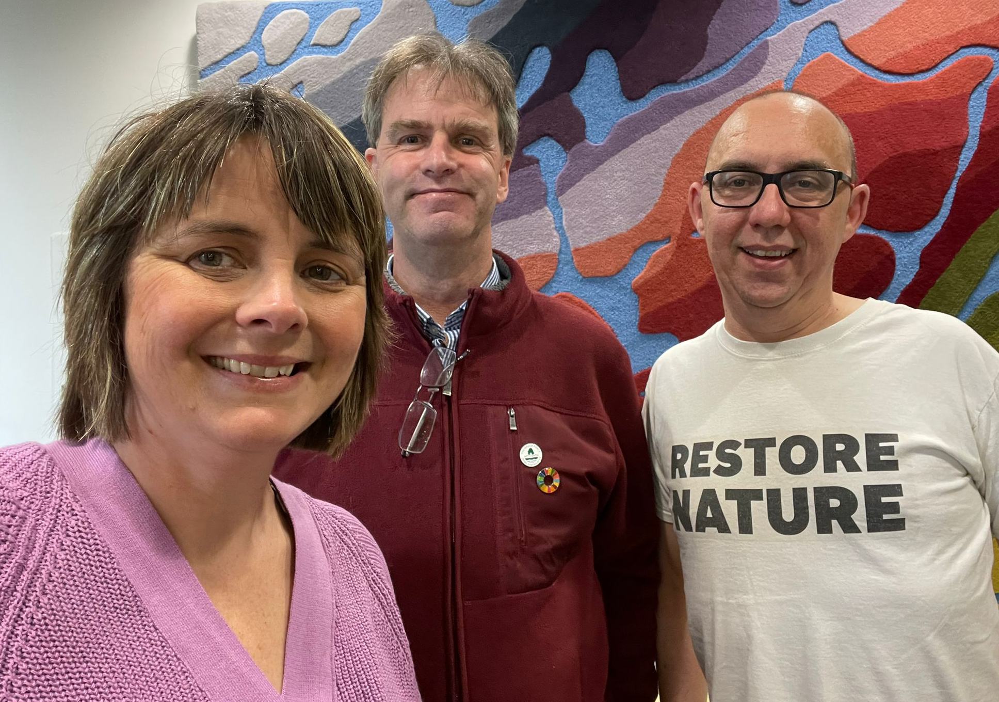
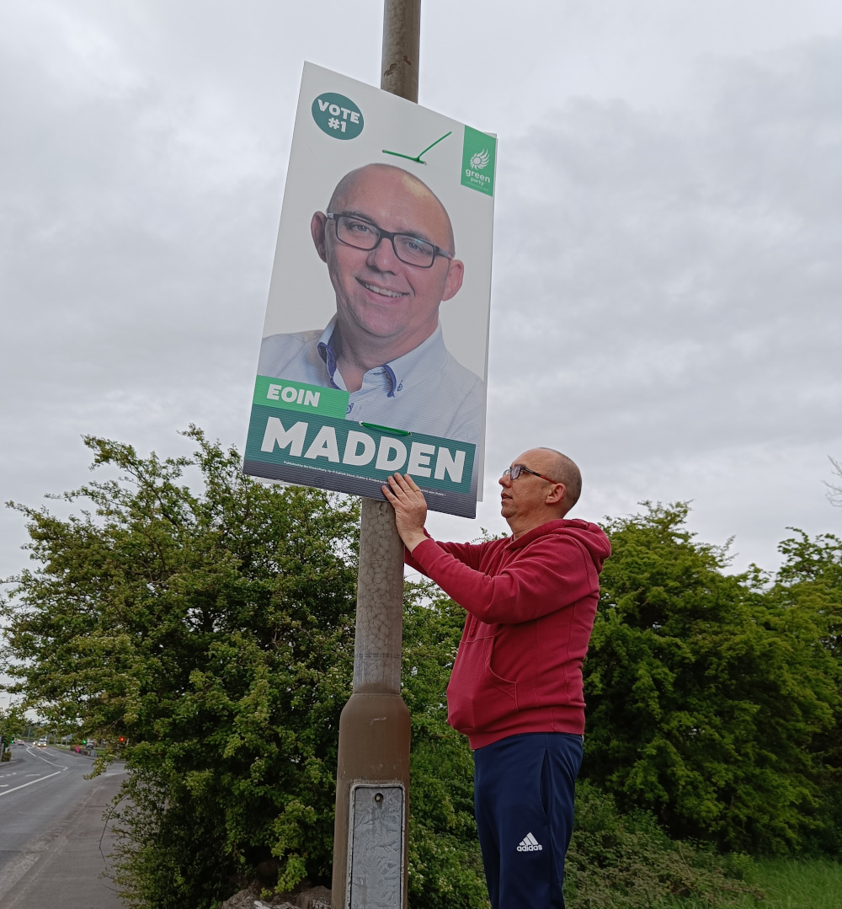

Out-and-about on the campaign trail

In Oranmore, canvasing with MNW European Election candidate, Sen. Pauline O'Reilly
Eoin canvasing at Athenry Stataion

Canvasing on the highways, the byways and the boreens

Canvasing with the Galway Team at Pearse Stadium

At the Athenry CycleFest

Canvasing with Islammiyah Kadejo, Green Part Candidate
for Tuam LEA.

Registering as candidates
Megan Flynn Dixon
(Gort-Kinvara LEA), Cllr Alastair McKinstry (Connemara
South LEA)
and Eoin Madden (Athenry-Oranmore LEA)

Postering in Claregalway

Taking a break from canvasing (but still thinking Green)